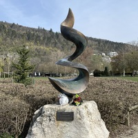
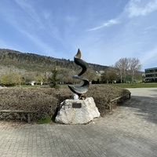
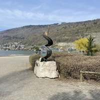
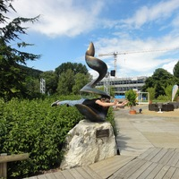

Joss Walter Uhlmann, Lebensflamme (2011/2012)
Contenu
Titre
Joss Walter Uhlmann, Lebensflamme (2011/2012)
Description
Der Berliner Künstler Christian Jankowski hat für die 12. Ausgabe der SPA (2014) mit dem Titel "Le Mouvement" einen Sportparcours für die Skulpturen im öffentlichen Raum Biels entwickelt. Joss Uhlmanns Bronzeplastik "Lebensflamme" am Strandboden war Teil des Parcours. Dort sollten Besuchende die Übung "Planking" ausführen: "Lie centrally on the sculpture and strech arms and legs away from you, your body forming a horizontal line. Hold this position for 10 seconds. Repeat 5 times." Es entstand zur Ausstellung eine Fotoserie, ein Künstlerbuch und Schnappschüsse von Besucher:innen, die Jankowskis Sportanweisung folgten. Eine Fotografie zeigt eine Kunstturnerin bei der Ausführung der Übung, fotografiert von der Kunstkritikerin Annelise Zwez (der Grossmutter des Mädchens).
Wir sind auf der Suche nach weiteren Fotografien von turnenden Besucher:innen. Bitte teilen Sie ihre Fotografien mit uns auf publics-arts.ch.
Wir sind auf der Suche nach weiteren Fotografien von turnenden Besucher:innen. Bitte teilen Sie ihre Fotografien mit uns auf publics-arts.ch.
liste des auteurs
Fotograf:in für Abbildung 1-3: Christopher Kilchenmann (2023), für Abbildung 4: Annelise Zwez (2014)
Créateur
Joss Walter Uhlmann
with Role
Archivar:in
Format
Kunstwerk
Couverture temporelle
2014 12. ESS-SPA
Sujet
Skulptur

IMG_6694.jpeg
IMG_6695.jpeg
IMG_6689.jpeg
9 Mov 9 nach Jankowski Joëlle.jpgCe contenu a été déposé le November 22, 2023 par [utilisateur anonyme] en utilisant le formulaire "Beitrag hochladen" sur le site "Öffentlichkeiten der Kunst": https://www.publics-arts.ch/s/oedk
Cliquer ici pour voir les données collectées.